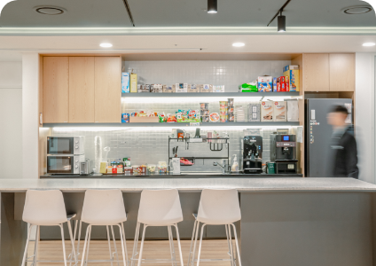

희귀질환 환자를 위한 해답을 찾는 여정에 합류하세요.
고민되는 상황이 생긴다면 팀 목표를 위한 일은 무엇인지 생각하고 올바른 방향으로
움직이며,
확신이 없을 때는 주저 없이 동료들에게
도움을 구합니다.
끊임없는 도전을 위해 실패를 두려워하지 않습니다.
도전의 과정에서 경험한 실패가 있다면,
이를 통해 학습하고 다 같이 공유하며
더 나은
방법을 찾습니다.
가장 좋은 결과를 만드는 목표에 집중할 수 있도록,
불필요한 형식과 절차,
규율과 규칙들은 최소화합니다.
추구합니다
겸손한 사람은 과신하지 않고 스스로의 부족함을
채우기 위해 노력합니다. 끊임없는 학습을 통해
성장하고 커리어를 발전시키며, 회사의
성장에도
기여합니다.
서로의 다양한 생각과 의견을 존중하며 항상 대화의 길을 열어둡니다.
업무와 관련해 어떠한 의견을 내더라도 비난, 질책, 불이익을
받지 않을 것이라는 믿음으로 다양한 의견을
주고받으며,
이를 통해 더
나은 성과를 만듭니다.
우리는 모두 실력을 갖춘 전문가로, 학습을 통해
실무 능력을 갖춘 전문가로 한 단계 더 나아갑니다.
-
자율적인 환경에서 효율적으로
일합니다.자율 출근제
업무 스타일에 따라 근무 시간을 자유롭게 조정할 수
있습니다.자유로운 휴가
연차휴가는 승인 없이 30분 단위로 자유롭게
사용합니다.업무 집중 휴가
집중할 수 있는 혼자 만의 공간, 포커스룸이 마련되어
있습니다. -

업무에
몰입할 수 있도록 돕습니다. 골라 먹는 점심 식사 다양한 음료와 간식이 구비되어 있는 라운지 도서, 세미나 등 업무 교육비 100% 지원 -
사소하지만
필요한 것들도 지원합니다. 경조휴가 및 경조금 직장 단체보험 종합건강검진
-
Q 채용 전형은 어떻게 되나요?
채용 전형은 서류전형 > 사전과제 > 면접전형 > 처우협의 및 채용검진 > 합류 순으로 진행됩니다.
사전과제는 직무 역량을 확인하기 위한 전형으로, 1차 면접을 대체합니다. 직무에 따라 1~2시간 정도 소요되며, 지원자가 편한시간에, 온라인으로 진행합니다.
면접전형은 직무적합성과 조직적합성을 알아보는 자리이며, 다대 일로 약 1시간 가량 진행합니다. 서류전형 이후 모든 전형은 지원자의 일정에 맞추어 조율하고 있습니다. 이메일 또는 유선으로 안내드리고 있으니 지원서에 기재한 연락처를 잘 확인해 주시기 바랍니다. -
Q 지원서 제출 후 전형 결과를 확인할 수 있나요? 가능하다면 언제쯤 알 수 있을까요?
채용 전형은 서류전형 > 사전과제 > 면접전형 > 처우협의 및 채용검진 > 합류 순으로 진행됩니다.
사전과제는 직무 역량을 확인하기 위한 전형으로, 1차 면접을 대체합니다. 직무에 따라 1~2시간 정도 소요되며, 지원자가 편한시간에, 온라인으로 진행합니다. 면접전형은 직무적합성과 조직적합성을 알아보는 자리이며, 다대 일로 약 1시간 가량 진행합니다. 서류전형 이후 모든 전형은 지원자의 일정에 맞추어 조율하고 있습니다. 이메일 또는 유선으로 안내드리고 있으니 지원서에 기재한 연락처를 잘 확인해 주시기 바랍니다. -
Q 포트폴리오를 필수로 제출해야 하나요?
채용 전형은 서류전형 > 사전과제 > 면접전형 > 처우협의 및 채용검진 > 합류 순으로 진행됩니다.
사전과제는 직무 역량을 확인하기 위한 전형으로, 1차 면접을 대체합니다. 직무에 따라 1~2시간 정도 소요되며, 지원자가 편한시간에, 온라인으로 진행합니다. 면접전형은 직무적합성과 조직적합성을 알아보는 자리이며, 다대 일로 약 1시간 가량 진행합니다. 서류전형 이후 모든 전형은 지원자의 일정에 맞추어 조율하고 있습니다. 이메일 또는 유선으로 안내드리고 있으니 지원서에 기재한 연락처를 잘 확인해 주시기 바랍니다. -
Q 과거 불합격한 이력이 있어도 재지원 가능한가요?
채용 전형은 서류전형 > 사전과제 > 면접전형 > 처우협의 및 채용검진 > 합류 순으로 진행됩니다.
사전과제는 직무 역량을 확인하기 위한 전형으로, 1차 면접을 대체합니다. 직무에 따라 1~2시간 정도 소요되며, 지원자가 편한시간에, 온라인으로 진행합니다. 면접전형은 직무적합성과 조직적합성을 알아보는 자리이며, 다대 일로 약 1시간 가량 진행합니다. 서류전형 이후 모든 전형은 지원자의 일정에 맞추어 조율하고 있습니다. 이메일 또는 유선으로 안내드리고 있으니 지원서에 기재한 연락처를 잘 확인해 주시기 바랍니다. -
Q 2개 이상의 포지션으로 중복지원도 가능한가요?
채용 전형은 서류전형 > 사전과제 > 면접전형 > 처우협의 및 채용검진 > 합류 순으로 진행됩니다.
사전과제는 직무 역량을 확인하기 위한 전형으로, 1차 면접을 대체합니다. 직무에 따라 1~2시간 정도 소요되며, 지원자가 편한시간에, 온라인으로 진행합니다. 면접전형은 직무적합성과 조직적합성을 알아보는 자리이며, 다대 일로 약 1시간 가량 진행합니다. 서류전형 이후 모든 전형은 지원자의 일정에 맞추어 조율하고 있습니다. 이메일 또는 유선으로 안내드리고 있으니 지원서에 기재한 연락처를 잘 확인해 주시기 바랍니다. -
Q 전문연구요원이나 산업기능요원도 지원 가능한가요?
채용 전형은 서류전형 > 사전과제 > 면접전형 > 처우협의 및 채용검진 > 합류 순으로 진행됩니다.
사전과제는 직무 역량을 확인하기 위한 전형으로, 1차 면접을 대체합니다. 직무에 따라 1~2시간 정도 소요되며, 지원자가 편한시간에, 온라인으로 진행합니다. 면접전형은 직무적합성과 조직적합성을 알아보는 자리이며, 다대 일로 약 1시간 가량 진행합니다. 서류전형 이후 모든 전형은 지원자의 일정에 맞추어 조율하고 있습니다. 이메일 또는 유선으로 안내드리고 있으니 지원서에 기재한 연락처를 잘 확인해 주시기 바랍니다. -
Q 쓰리빌리언에 대해 더 알아보고 싶다면 어디서 정보를 찾을 수 있을까요?
채용 전형은 서류전형 > 사전과제 > 면접전형 > 처우협의 및 채용검진 > 합류 순으로 진행됩니다.
사전과제는 직무 역량을 확인하기 위한 전형으로, 1차 면접을 대체합니다. 직무에 따라 1~2시간 정도 소요되며, 지원자가 편한시간에, 온라인으로 진행합니다. 면접전형은 직무적합성과 조직적합성을 알아보는 자리이며, 다대 일로 약 1시간 가량 진행합니다. 서류전형 이후 모든 전형은 지원자의 일정에 맞추어 조율하고 있습니다. 이메일 또는 유선으로 안내드리고 있으니 지원서에 기재한 연락처를 잘 확인해 주시기 바랍니다.
쓰리빌리언은 「개인정보 보호법」 제30조에 따라 정보주체의 개인정보를 보호하고 이와 관련한 고충을
신속하고 원활하게 처리할 수 있도록 하기 위하여 다음과 같이 개인정보 처리방침을 수립·공개합니다.
개인정보보호법에 의거하여 개인정보의 처리라 함은, 개인정보의 수집, 생성, 기록, 저장, 보유, 가공,
상담을 시작해 보세요.
카카오톡으로 QR코드를 스캔하면
바로 상담을 시작할 수 있습니다.